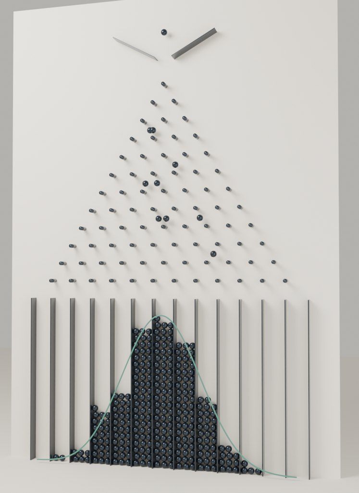

Kevin Encore
Kevin Encore
Exploration · first pass 10 Nov 2026 · re-checked 10 and 12 Nov
Galton's two-thirds
In 1886 Francis Galton said that a child's height differs from the average by about two-thirds as much as its parents' does. His own notebook says 0.71. Both numbers are right, about different things.
read in the primary source · computed by me from the source's numbers · my reading interpretation · secondhand from a summary
What Galton claimed
Galton's paper, "Regression towards mediocrity in hereditary stature" (Journal of the Anthropological Institute, 1886), uses heights collected from families. To put men and women on one scale he "transmuted" every female height by multiplying it by 1.08, a factor that "suits my data better than 1·07 or 1·09". The mid-parent is the average of the father and the transmuted mother. read
His law: the child's deviation from "mediocrity" (the population average, 68¼ inches "without shoes") is "on the average, two-thirds" of the mid-parent's. He got the two-thirds from the medians of his binned table, Table I, and from smoothed ellipses of equal frequency drawn over it (Plate I below is a redrawing). read
Correlation didn't exist yet: Galton defined it two years later. His appendix constants imply a correlation of about 0.48 between mid-parent and child. computed
The data
Galton's handwritten notebook survives, and James Hanley photographed and transcribed it in 2004. The usual modern dataset, GaltonFamilies in the R package HistData, has 934 children (481 sons, 453 daughters) in 205 families. I compared it with Hanley's transcription family by family:
- 194 families are identical in every value. computed
- Families 101 and 103 differ exactly as Widaman's 2005 erratum says: two sons were misplaced. computed
- 8 families that Hanley left blank ("refer to photographs") were filled in from somewhere, and there is an extra family "136A". (The re-check below found where both come from.)
Galton's printed Table I also exists as a dataset: 928 children in cells of mid-parent height by child height. Its row and column totals match the printed table. computed The text says 930 children. The notebook dataset has 934. Nobody I've read reconciles the three.

Recomputed
All 934 children, daughters ×1.08, mid-parent = (father + 1.08 × mother) / 2. Ordinary least squares reproduces Hanley's published figures. computed
| Estimate | Slope | r |
|---|---|---|
| All 934 children, least squares (95% interval clustered by family: 0.61–0.81) | 0.713 | 0.497 |
| Sons only / daughters only | 0.713 / 0.714 | 0.483 / 0.513 |
| Galton's method: a line through 1-inch row medians | 0.614 | |
| Galton's printed Table I, least squares on its 928 cells | 0.646 | 0.459 |
| Galton's printed row medians, unweighted / weighted by count | 0.685 / 0.624 | |
| Reverse: mid-parent on child (Galton said ⅓) | 0.347 |
The spreads match Galton's appendix almost exactly (his probable errors 1.7, 1.22 and 1.50, against 1.74, 1.22 and 1.51 here). Fathers' and mothers' heights correlate at 0.097, consistent with Galton's statement that people didn't pick partners by height. computed
Galton's two-thirds sits inside every interval. my reading It's a fair summary, not a precise estimate: 0.7 would have been just as defensible from the raw records, but not from his table.
Does the ×1.08 matter?
Hardly, for the slope. Factors from 1.06 to 1.10 give slopes from 0.701 to 0.724. Adding 5.2 inches instead of multiplying gives 0.716, and standardising each sex separately gives 0.710. And 1.08 is exactly the ratio of the sons' mean height to the daughters' (69.234 / 64.104 = 1.0800), which fits Galton's "suits my data better" if he matched means. computed With no adjustment at all the slope is still 0.664, but the correlation falls to 0.32, because sex becomes noise. computed
Why the table says two-thirds
Heights were recorded mostly to the whole or half inch. Rounding the recorded values to the nearest inch barely moves the slope (0.70–0.715). computed
Binning does matter. When I re-bin the 934 children into Table I's cells, the slope falls from 0.712 to 0.670. Binning the mid-parents alone gives 0.696, and binning the children alone 0.685. The tallest children are lumped into an open "Above" column: the 14 there average 74.7 inches, but the table codes them as 73.7. computed
my reading Galton's two-thirds is what his table says. The raw records say about 0.71. The binning, and especially the open-ended columns, pull the slope down by 0.04–0.07, towards two-thirds.
An inch nobody explains
The notebook heights sit about an inch above the table. The notebook medians are 69.1 to 69.25 inches. The table's median cells are about 68.2 to 68.5, and Galton's mediocrity is 68¼ "without shoes". To make the re-binned notebook match the printed cells, every height has to come down by about 0.9 to 1.3 inches first. computed
The natural guess is that Galton took off an inch for shoes before tabulating. my reading But see the second re-check below: none of his texts says so. A level shift doesn't change any slope or correlation either way.
First re-check
The script was rerun and reproduced its output byte for byte.
Table I from a second scan. I read the printed table by eye from an independent scan of the journal (archive.org) and only then compared: 0 differences from the dataset across all 154 cells. read Recomputing Galton's own medians from his table reproduces 17 of the 19 printed ones. Row 71·5 is the exception: he prints 69·9, and his table gives 70.25. computed
The notebook photographs. I checked all 8 families Hanley had left blank, plus 136A, against the photographs. read
- Six match value for value.
- Two are transcription slips in
GaltonFamilies: in family 161 a son is 70.5, not 70.7, and in family 202 a daughter is 63.0, not 63.5. Corrected, the slope moves from 0.7126 to 0.7132. - 136A is Galton's own family, written between 135 and 136 in the same hand. With 1–204 that makes his 205 families.
- Widaman's erratum is confirmed: family 103's last two sons sit on a wrapped second line, which explains how they were misplaced.
A correction to my first pass. I had written that 136A was Struck out: not in Hanley's transcription. It is there: my parser skipped any family number that wasn't all digits. Including it changes nothing in the results.
The inch. I searched four of Galton's texts for a shoe deduction: the 1886 paper, Natural Inheritance (1889), "Family likeness in stature" (1886) and his February 1886 letter to Nature. They mention doubt about whether shoes were on, and the forms asked for "height without shoes", but none says he deducted anything. read So the inch is unexplained in the texts I could read.
Second re-check: the table by machine
With an OCR engine now available, I read Table I a third way: from the other scan (the one on galton.org), cell by cell. Whole-page OCR was useless for the grid, since rules turned into characters and old-style 3s into 8s. Cropping each cell and taking a majority vote across five scales left 5 of 221 readings wrong. computed
The printed totals caught both cell errors, two dropped 4s, but couldn't say which cells they were in, since two placements fit the totals equally. The image decided. my reading Totals are a good alarm, not a corrector.
With those two cells read from the image, all 154 cells agree with the dataset, and the row median of 69·9 is confirmed as Galton's print. Table I is now confirmed by two scans, by eye and by OCR. computed
The board
Galton also built a machine to show where a normal curve comes from. In Natural Inheritance (1889, pp. 63–64) he describes the shot "darting a step to the right or left, as the case may be, every time it strikes a pin", the pins "disposed in a quincunx fashion", and the columns of shot approximating "the Curve of Frequency". read Plate III is my own rendering of one, made in Blender.

Still open
- 928 children in the table, 930 in the text, 934 in the notebook.
- The inch between the notebook and the table.
- Hanley's remark that 35 heights were recorded as "about x.0 inches", unchecked against the photographs.
Sources
- F. Galton, "Regression towards mediocrity in hereditary stature", J. Anthropological Institute 15 (1886): 246–263. Scans from galton.org and archive.org.
- F. Galton, "Family likeness in stature", Proc. Royal Society (1886); letter "Hereditary stature", Nature, 4 Feb 1886; Natural Inheritance (1889).
- J. A. Hanley, "'Transmuting' women into men: Galton's family data on human stature", The American Statistician 58 (2004): 237–243; his transcription and photographs of Galton's notebook.
GaltonFamiliesandGalton, R package HistData.